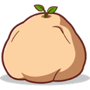
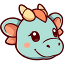
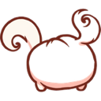
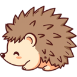
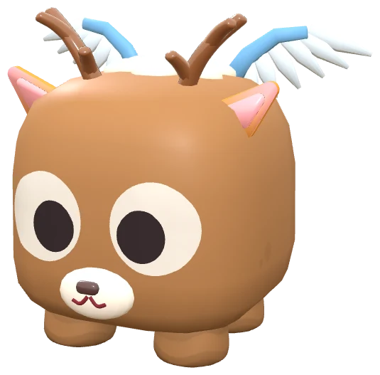
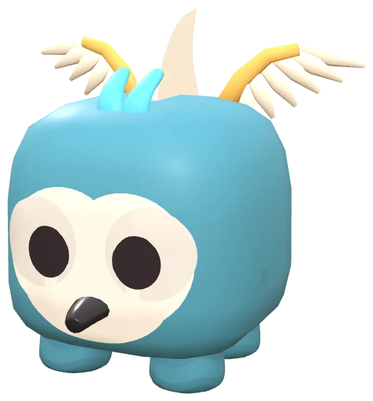
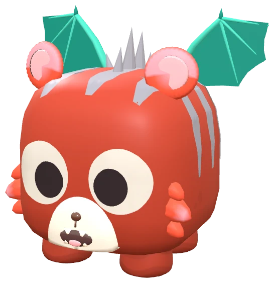
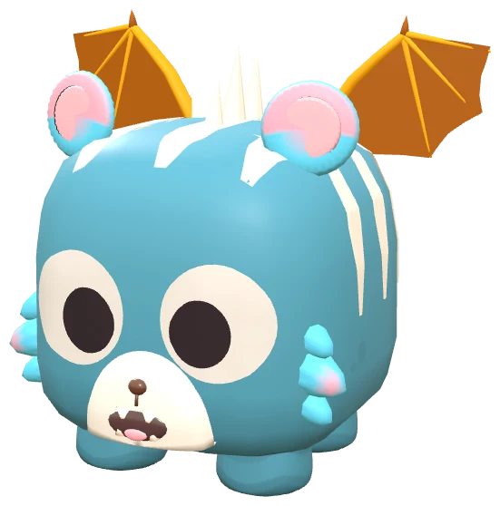
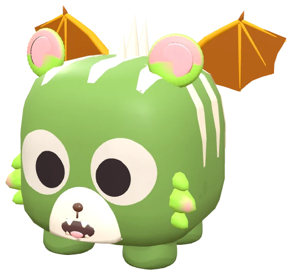
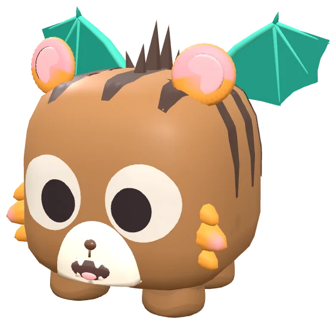

Dyeling หนึ่งตัวมีสีตามเผ่า และมี DNA 6 สาย · DNA คือสิ่งที่ทำให้ Dyeling แต่ละตัวต่างกัน: บอกเผ่า ค่าสถานะ ยีน และการ์ดที่ใช้ได้
A Dyeling takes its tribe's colour and has 6 strands of DNA · DNA is what makes every Dyeling different: it sets the tribe, the stats, the genes and the cards it can use.
 ดู DNA ทั้ง 31 แบบในห้องสมุดSee all 31 kinds of DNA in the Library
ดู DNA ทั้ง 31 แบบในห้องสมุดSee all 31 kinds of DNA in the Library
DNA 6 สาย6 strands of DNA

ลำตัว + ขาBody + legs
10 แบบ10 kinds
เผ่าปฐพี · เผ่าวารี · เผ่าวายุ · เผ่าอัคคี · เผ่าน้ำแข็ง · เผ่าลาวา · เผ่าหมอก · เผ่าโคลน · เผ่าควัน · เผ่าทรายEarth · Water · Wind · Fire · Ice · Lava · Mist · Mud · Smoke · Sand

หัวHead
5 แบบ5 kinds
หัวเขี้ยว (ATK) · หัวเขา (DEF) · หัวจะงอย (SPD) · หัวดูด (HP) · หัวพ่น (ทุกค่า)Fang Head (ATK) · Horn Head (DEF) · Beak Head (SPD) · Drain Head (HP) · Breath Head (all stats)
ดวงตาEyes
4 แบบ4 kinds
ตาปฐมภูมิ (SPD) · ตาเรืองแสง (HP) · ตานักล่า (ATK) · ตาประกาย (DEF)Primal Eyes (SPD) · Glow Eyes (HP) · Hunter Eyes (ATK) · Sparkle Eyes (DEF)
ปีกWings
4 แบบ4 kinds
ปีกค้างคาว (SPD) · ปีกแมลง (ATK) · ปีกมังกร (DEF) · ปีกขนนก (HP)Bat Wings (SPD) · Bug Wings (ATK) · Dragon Wings (DEF) · Feather Wings (HP)

หางTail
4 แบบ4 kinds
หางหนัก (ATK) · หางหนาม (DEF) · หางแส้ (SPD) · หางดูด (HP)Heavy Tail (ATK) · Thorn Tail (DEF) · Whip Tail (SPD) · Drain Tail (HP)

แผ่นหลังBack
4 แบบ4 kinds
ครีบหลัง (SPD) · หนามหลัง (ATK) · เกราะหลัง (DEF) · ผลึกหลัง (HP)Back Fin (SPD) · Back Spikes (ATK) · Back Armor (DEF) · Back Crystal (HP)
ในวงเล็บคือค่าสถานะที่ DNA แบบนั้นเด่น
The brackets show the stat that kind of DNA is strong in.
DNA หนึ่งสายมีอะไรWhat one strand holds
- แบบของ DNA เช่น หัวเขี้ยว ตาเหยี่ยว ปีกค้างคาว · แต่ละแบบเด่นคนละค่าสถานะ
- ค่าสถานะ HP ATK DEF SPD สุ่มใหม่ทุกครั้งที่เกิด DNA ส่วนใหญ่สุ่มค่าที่ตัวเองเด่นได้สูงกว่าค่าอื่น
- ยีน 3 ตัว ยีนหลักทำงาน ยีนแฝง 2 ตัวไม่ทำงานแต่ส่งต่อให้ลูกได้ — ดูหน้ายีน
- การ์ด DNA สองสายที่อยู่คนละส่วนจับคู่กันเป็นการ์ดหนึ่งใบ ทั้งเกมมี 386 ใบ · ใส่ได้ 6 การ์ด — ดูหน้าการ์ด
- The kind of DNA, such as Fang Head, Hawk Eyes or Bat Wings · each kind is strong in a different stat
- Stats HP, ATK, DEF and SPD are rolled anew at every birth; most kinds roll the stat they are strong in higher than the others
- 3 genes: the main gene works, the 2 hidden genes do nothing but can pass to the young — see Genes
- Cards: two strands from different parts pair up into one card; there are 386 in the game and 6 can be equipped — see Cards
ลำตัวกำหนดเผ่า (10 เผ่า)The body sets the tribe (10 tribes)
เผ่ามาจาก DNA ลำตัว + ขา · 4 เผ่ามีธาตุเดียว อีก 6 เผ่าเป็นเผ่าผสม 2 ธาตุ · ธาตุกำหนดการแพ้ทางในการต่อสู้ ส่วนเผ่ากำหนดสีของ Dyeling
The tribe comes from the body + legs DNA · 4 tribes have one element, the other 6 are mixed tribes with 2 elements · the elements decide who counters whom in a fight, and the tribe decides the Dyeling's colour.

ดินEarth

น้ำWater

ลมWind

ไฟFire

น้ำ + ลมWater + Wind

ไฟ + ดินFire + Earth

น้ำ + ไฟWater + Fire

น้ำ + ดินWater + Earth

ลม + ไฟWind + Fire

ลม + ดินWind + Earth
Dyeling แบบเดียวกัน คนละเผ่าOne Dyeling, different tribes
ชิ้นส่วนเหมือนกันทุกตัว แต่ลำตัวเปลี่ยนสีตามเผ่า
All four have the same parts. The body takes the colour of the tribe.




ผสมพันธุ์: ลูกได้อะไรจากพ่อแม่Breeding: what the young gets
- DNA หัว ตา ปีก หาง หลัง แต่ละสายมาจากพ่อหรือแม่ โอกาสเท่ากัน · ค่าสถานะสุ่มใหม่ทุกครั้ง
- เผ่า ดูแต้มธาตุของลำตัวพ่อแม่: เผ่าเดี่ยวให้ธาตุของตัวเอง 2 แต้ม เผ่าผสมให้ธาตุละ 1 แต้ม รวม 4 แต้ม แล้วสุ่มสองครั้ง · ธาตุเดียวกันสองครั้ง = เผ่าเดี่ยวนั้น คนละธาตุ = เผ่าผสมของสองธาตุนั้น
- ยีน แต่ละช่องสุ่มจากยีนของพ่อแม่: ยีนหลัก 50% · แฝง 1 30% · แฝง 2 15% · กลายพันธุ์เป็นยีนใหม่ 5% (ระดับของยีนใหม่สุ่มตามตาราง: F 40% D 25% C 17% B 10% A 6% S 2%)
- Head, eyes, wings, tail and back DNA: each strand comes from the father or the mother at equal odds · the stats are rolled anew
- Tribe follows the element points of the parents' bodies: a pure tribe gives 2 points of its element, a hybrid 1 point of each of its two; the 4 points are pooled and 2 are drawn · the same element twice = that pure tribe, two different = the hybrid of those two
- Genes: each slot is drawn from the parents' genes: main 50% · hidden 1 30% · hidden 2 15% · mutation into a new gene 5% (a new gene's tier rolls on this table: F 40% D 25% C 17% B 10% A 6% S 2%)
ตัวอย่างเผ่าของลูกExamples: the young's tribe
- เผ่าอัคคี × เผ่าอัคคี → เผ่าอัคคี 100%
- เผ่าอัคคี × เผ่าวารี → เผ่าหมอก 50% · เผ่าอัคคี 25% · เผ่าวารี 25%
- เผ่าอัคคี × เผ่าหมอก → เผ่าอัคคี 56.25% · เผ่าหมอก 37.5% · เผ่าวารี 6.25%
- เผ่าน้ำแข็ง × เผ่าทราย → เผ่าน้ำแข็ง 25% · เผ่าทราย 25% · เผ่าวายุ 25% · เผ่าโคลน 12.5% · เผ่าปฐพี 6.25% · เผ่าวารี 6.25%
- Fire × Fire → Fire 100%
- Fire × Water → Mist 50% · Fire 25% · Water 25%
- Fire × Mist → Fire 56.25% · Mist 37.5% · Water 6.25%
- Ice × Sand → Ice 25% · Sand 25% · Wind 25% · Mud 12.5% · Earth 6.25% · Water 6.25%